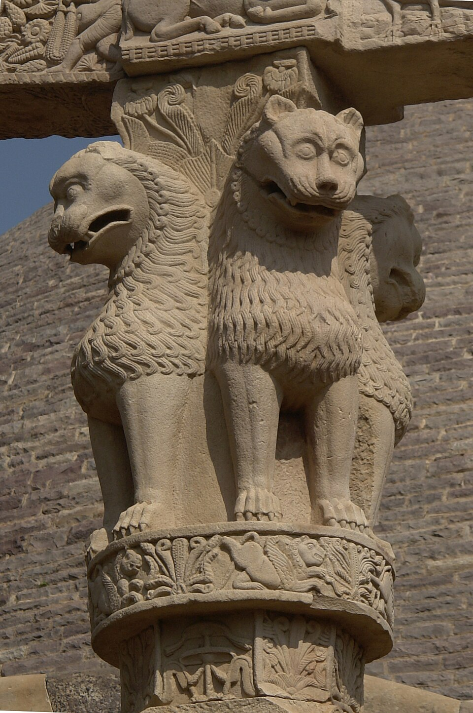

Core Content
EXAM TIP
Mauryan Empire (321-185 BCE, ~137 years): Founded by Chandragupta Maurya (321 BCE, advised by Chanakya/Kautilya). Capital: Pataliputra (Bihar). Peak under Ashoka (268-232 BCE). Kalinga War (261 BCE, Odisha) → Ashoka embraced Buddhism. Third Buddhist Council (Pataliputra, 250 BCE). Missionaries to Sri Lanka (Mahendra + Sanghamitra). Decline after Ashoka; last king Brihadratha killed by Pushyamitra Shunga (185 BCE).

Lion Capital of Ashoka (Sarnath, c. 250 BCE) — four lions standing back-to-back, originally atop an Ashokan pillar. Adopted as the National Emblem of India (1950). The inverted lotus base, Dharma Chakra (wheel), and four animals (lion, elephant, bull, horse) are masterpieces of Mauryan art. Carved from polished Chunar sandstone.

Sanchi Stupa (Madhya Pradesh) — originally commissioned by Ashoka (c. 250 BCE), enlarged during the Shunga period. The Great Stupa at Sanchi is one of the oldest stone structures in India. UNESCO World Heritage Site (1989). Ashoka's daughter Sanghamitra and son Mahendra carried Buddhism to Sri Lanka from Pataliputra (Bihar).
💡 Deep-dive ready: Complete analysis of the Mauryan Empire, rulers, administration, Ashokan edicts, Bihar connections, and 7 exam predictions:
Mauryan Empire Master Detail →
A. Mauryan Rulers — Key Facts EXAM CORE
| Ruler | Reign | Key Facts |
|---|---|---|
| Chandragupta Maurya | c. 321-297 BCE | Founder. Overthrew Nandas (with Chanakya). Capital: Pataliputra. Defeated Seleucus Nicator (303 BCE) → gained Afghanistan. Megasthenes came as ambassador. Later embraced Jainism, died at Shravanabelagola (Karnataka) via Sallekhana. |
| Bindusara | c. 297-273 BCE | Son of Chandragupta. Extended empire south to Deccan. Greeks called him 'Amitrochates' (slayer of enemies). Maintained Greek diplomatic ties. Father of Ashoka. |
| Ashoka the Great | c. 268-232 BCE | Son of Bindusara. Peak of empire (Afghanistan to Bengal, Himalayas to Karnataka). Kalinga War (261 BCE) → embraced Buddhism. Third Buddhist Council (Pataliputra, 250 BCE). Rock/Pillar edicts. Missionaries to Sri Lanka. National emblem = Sarnath Lion Capital. |
| Successors | c. 232-185 BCE | Decline after Ashoka. Weak successors, decentralized provinces. Last king: Brihadratha, killed by Pushyamitra Shunga (185 BCE) → Shunga dynasty founded. |